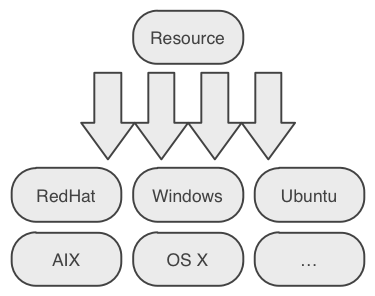

#Configuration Management
vs.
Domain Specific Language
Types => Providers
Specify once, use many times!!!
resource_type { 'title':
ensure => present,
attribute_1 => 'value',
attribute_2 => 'another value',
}
primer.pp
notify { 'Hello': }
will result in
[default] Running Puppet with /tmp/vagrant-puppet/manifests/primer.pp
notice: Hello
notice: /Stage[main]//Notify[Hello]/message: defined 'message' as 'Hello'
notice: Finished catalog run in 0.03 seconds
$ puppet help
Usage: puppet [options] [options]
Available subcommands:
apply Apply Puppet manifests locally
describe Display help about resource types
man Display Puppet manual pages
module Creates, installs and searches for modules on Forge
resource The resource abstraction layer shell
... and many more ....
See 'puppet help <subcommand>' for help on a specific subcommand.
$ git clone https://github.com/xebia/puppet-primer.git
$ vagrant up
$ vagrant provision
Will run puppet apply primer.pp on VirtualBox image
$ vagrant ssh
https://github.com/xebia/puppet-primer
primer.pp
file { 'testfile':
ensure => present,
path => '/tmp/puppet.txt',
content => 'Puppet FTW',
} Hostname? IP address?
Extracts information from system ...
... and passes them as variables to puppet
file { 'testfile':
ensure => present,
path => '/tmp/puppet.txt',
content => "${hostname} ${ipaddress}",
}
user { 'username':
uid => '500',
gid => 'system',
manage_home => true,
}
Puppet DSL is declarative
Will execute at a consistent but unpredictable order
notify { 'First': }
notify { 'Second': }
notify { 'First': }
notify { 'Second':
require => Notify['First']
}
shorthand:
notify{ 'First': } -> notify {'Second': }
Four relationships
->)<-)~>)<~)>30 providers: yum, rpm. apt, msi, apple, ...
Puppet will guess provider based on OS, but you can override
package { 'my-package':
ensure => present,
provider => 'yum',
}
package { 'httpd':
ensure => present,
}
Most platforms can run services
Specify parameters for
service { 'httpd':
ensure => running,
enabled => true,
}
service { 'iptables':
ensure => stopped,
}
package { 'openssh-server':
ensure => present,
before => File['/etc/ssh/sshd_config'],
}
file { '/etc/ssh/sshd_config':
ensure => file,
mode => 600,
source => '/root/learning-manifests/sshd_config',
}
service { 'sshd':
ensure => running,
enable => true,
hasrestart => true,
hasstatus => true,
subscribe => File['/etc/ssh/sshd_config'],
}
Class = collection of resources
# defining class
class someclass {
...
}
# declaring (activating) class
class { 'someclass': }
# ... or ...
include someclass
Classes are not really portable
Modules = bundles of code and data
Puppet autoloads modules, ready to include
my_module
manifests/
init.pp — Mandatory, class name must match module name
foo.pp — Class named my_module::foo.
impl/ — Directory name impacts names classes below
bar.pp — Class named my_module::impl::bar.
files/ — Contains static files
lib/ — Contains custom facts, resource types, etc
templates/ — Contains dynamic templates
tests/ — Contains examples
manifests/init.pp — Entry point for module
Must contain: class my_module{...}
manifests/foo.pp
— class my_module::foo { ... }
manifests/impl/bar.pp
— class my_module::impl::bar { ... }
Static files: config files, installation binaries, etc
Reference them from manifests
file { '/etc/my_module/static.conf':
source => 'puppet:///modules/my_module/static.conf'
}
Dynamically generated files, using variables & facts
Evaluate using template() function
file { '/etc/my_module/dynamic.conf':
content => template("my_module/dynamic.conf.erb")
}
# my_module config
# this file is managed by puppet
# manual changes will be overwritten
hostname = <%= @hostname %>
listen_address = <%= @ipaddress %>
listen_port = <% @port %>
Puppet master; Parameterized classes; defined resources; ruby dsl; hiera; puppet db; catalog compilation; master agent security; External Node classifiers; site.pp; puppet.conf; exec's; puppet lint; rspec puppet; cucumber puppet; Custom types and providers; Parser functions; Puppet dashboard; custom facter plugins; plugin synchronisation; MCollective; Foreman; Puppet environments; Nodes; cloud provisioner; Virtual resources; exported resources; spaceship operator; mothership operator; MCollective plugins; Puppet reporting;